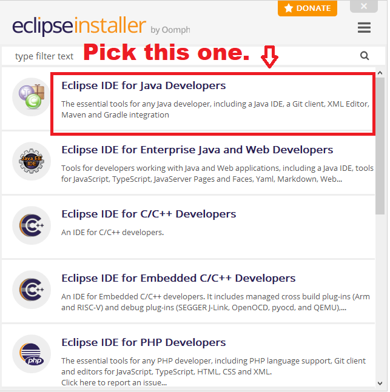
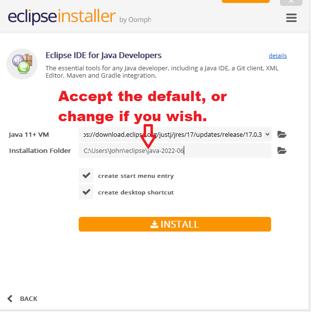
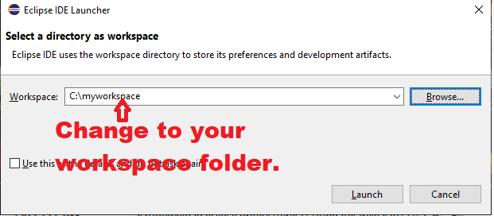
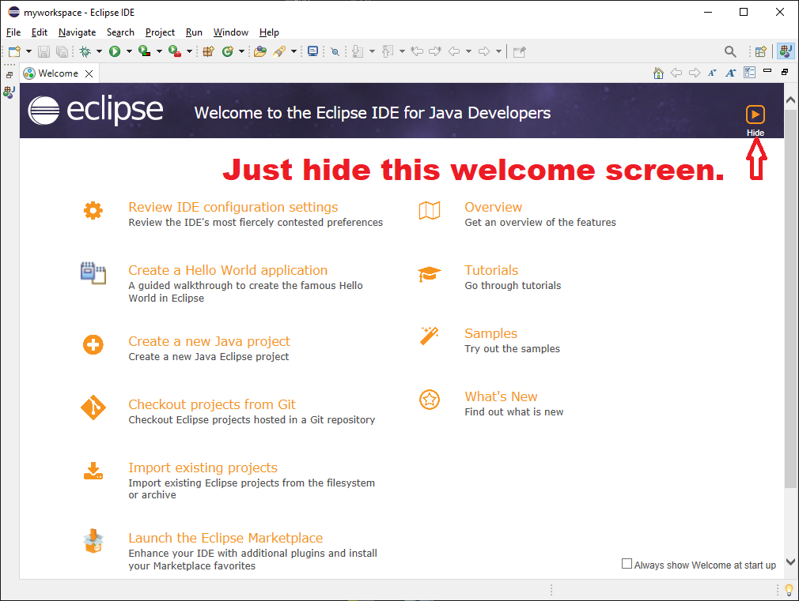
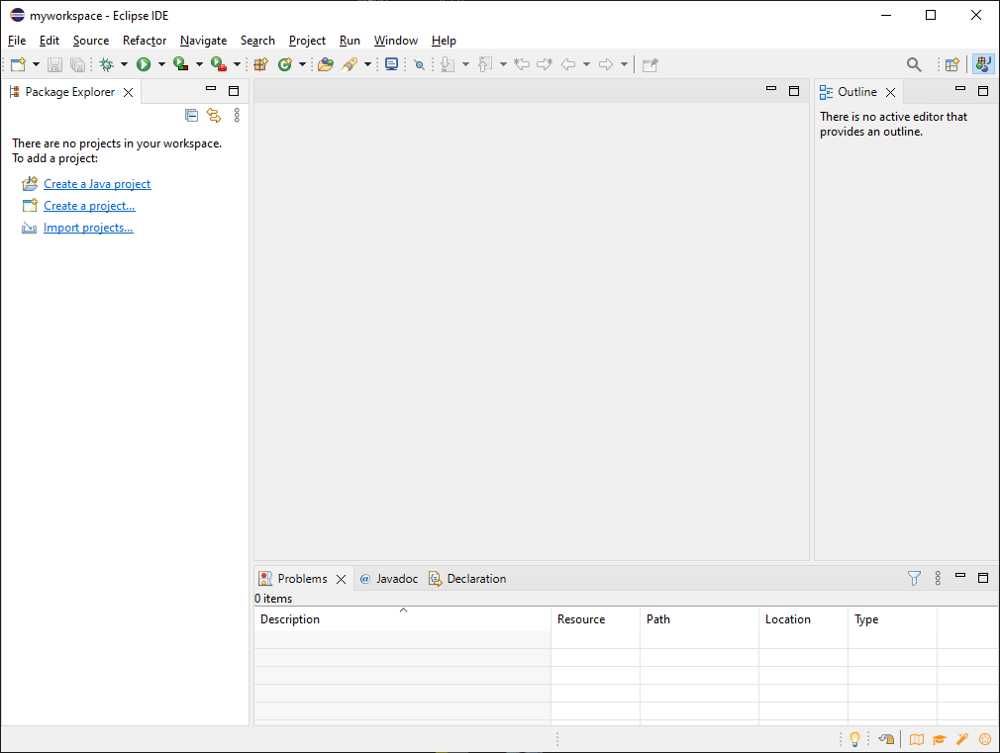

End Game - personal finance simulator for retired Canadians
The source code is here.
Getting Started
Running The Code In Eclipse
Step 1 - Folders and Source Code
First, create a workspace folder on your machine.
When you launch Eclipse, you need to point to a workspace folder.
A workspace folder contains project folders, each containing the source code for a project.
These instructions will use a workspace named
C:\myworkspace\
An example setup:
C:\myworkspace\ [the workspace folder]
C:\myworkspace\end-game [the project folder for end-game]
./settings
docs
input
lib [the various files and folders in the end-game project]
scenario
src
.classpath
.gitignore
.project
LICENSE.txt
README.md
Your setup will be similar, except you can replace C:\myworkspace\ with something else, if you wish.
Next, you need to put the source code into the above folder structure:
- go to the github repository
- click on the Code button
- click on Download ZIP
- copy the end-game-master.zip file to your workspace folder
- unzip the file
- change the name of the new folder from end-game-master to end-game
- your folders should follow the pattern shown above!
Step 2 - Install and Run Eclipse
Install and run Eclipse, following these steps:
download the Eclipse installer.
Run the installer, and select Eclipse IDE for Java Developers.

Put Eclipse in a convenient location on your computer.

Launch Eclipse, and point it to the workspace directory you created earlier.

The first time you launch Eclipse, it will show you a welcome screen. Close the welcome screen.

Now you will see the main Eclipse window.

Step 3 - Import the end-game Project into Eclipse
- click on Import Projects. Or, from the menu, select File -> Import...
- choose General -> Existing Projects into Workspace - like this
- point to the end-game project folder - like this
- the result should look like this
Step 4 - Run a Provided Scenario
Step 5 - Create your own Scenario
Now you are ready to experiment with your own scenarios.
- create your own scenario file. You can place the scenario anywhere you want.
Many will find it convenient to follow the existing pattern under the scenario folder in the project.
You'll likely want to explore multiple scenarios, so you might create multiple folders under scenario, one folder
for each new scenario.
- set the project-root location in the scenario file
- execute the RunSimulation class.
You need to tell it the file location of your scenario file.
The simplest way is to hard-code it in the RunSimulation class itself.
Step 6 (Optional) - Install the JavaCC plugin
You can skip this if you wish. The JavaCC tool lets you change the syntax of the scenario file.
You won't likely need to do that.
To install the JavaCC plugin into Eclipse
- from the menu, select Help -> Eclipse Marketplace
- in the Find box, enter "javacc" and hit Enter
- click the Install button for the JavaCC plugin
{kind=link}
{kind=link}
{kind=link}